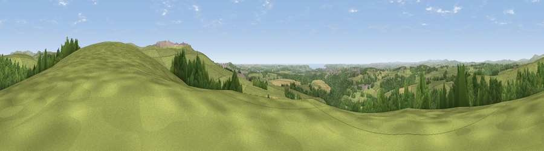

Viewpoint near Shaugh Prior
#1883 in England · top 3% of its area beats it · near Shaugh PriorThe view, rendered

A 360° render of this exact spot computed from the terrain model, tree cover and land cover — summer colours, afternoon light, calibrated against photographs of famous viewpoints. Real trees, hedges and buildings will differ in detail.
The panorama
Grey silhouette: terrain skyline in each direction (720 bearings, Earth curvature and refraction included). Dashed green: skyline with trees (+15 m) and buildings (+8 m) as obstacles. Blue strip: how far the ground is visible on each bearing.
Where the view opens
Wedge length = distance to the farthest visible ground on that bearing (vegetation-aware). Rings at 10, 25 and 50 km.
What fills the view
53% grassland · 39% woodland · 4% cropland · 2% built-up · 1% shrubland ·
Angular shares of the visible panorama (visual magnitude), not map area. Landscape diversity 0.44 (0–1 Shannon).
Key numbers
More beautiful places nearby
The staircase of upgrades: each row has a higher view potential than everything closer. Driving times are estimates from straight-line distance, calibrated against real road routing — check an actual route before setting out.
| Place | Direction | Drive | Score |
|---|---|---|---|
| Viewpoint near Lee Moor | ESE · 2 km | ~5 min | 82.7 |
| Viewpoint near Downderry | WSW · 23 km | ~37 min | 83.5 |
| Viewpoint near Hope | SSE · 28 km | ~45 min | 84.4 |
| Viewpoint near East Prawle | SE · 35 km | ~54 min | 84.6 |
| Pencarrow Head | WSW · 41 km | ~60 min | 86.0 |
| Viewpoint near Lesnewth | NW · 51 km | ~72 min | 87.7 |
| Viewpoint near Crackington Haven | NW · 51 km | ~73 min | 88.1 |
| Holdstone Hill | N · 85 km | ~109 min | 90.2 |
50.45251, -4.05442 · source: screening · position refined by local search. Computed location — check access rights before visiting.